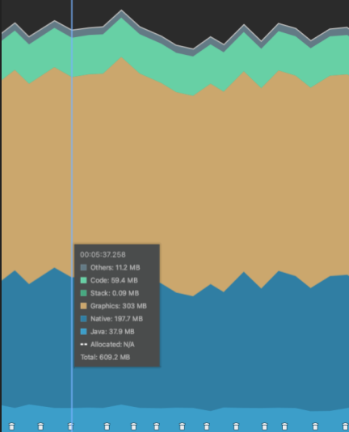

Android 爛裝置想跑人臉辨識6 – 三路高頻影像流：三倍蓋亞，趕快 GC
原文網址：https://boochlin.com/?p=912 發布日期：2026-06-17 文章編號：912

在我們這台掛在牆上的壁掛門禁機上，同時插了兩顆硬體鏡頭：
- RGB 可見光鏡頭：640x480 YUV420 @ 30fps（每幀 460.8 KB，吞吐量約 13.8 MB/s）。
- Sony IMX516 iToF 深度鏡頭：640x1920 RAW12 @ 30fps（4 相位 Raw 拼接，每幀 1.84 MB，吞吐量高達 55.3 MB/s）。
算盤一撥，現場數據令人頭皮發麻：
13.8 MB/s (RGB) + 55.3 MB/s (ToF RAW12) = 69.1 MB/s
兩顆鏡頭同時運作，底層每秒要吞吐超過 60 幀影像，原始數據灌入速度接近 每秒 70MB。
如果照著網路上常見的教科書範例寫：在相機回調裡把 YUV 轉成 Bitmap、每一幀 new 一個 Data 容器塞進隊列、再呼叫模型推論——
69.1 MB/s (相機原始幀) + 36.8 MB/s (RGB ARGB_8888 Bitmap) = 105.9 MB/s
每秒鐘往記憶體裡傾倒超過 100MB 的物件垃圾！在我們這台只有 4 核心 1.3GHz 弱 CPU、2GB RAM 的破板子上，Java Heap 在 1.5 秒內就會被直接塞滿，觸發頻繁的 Stop-The-World 阻塞式 GC，畫面瞬間卡死成幻燈片。
這是一場在懸崖邊緣的極限拉鋸戰。要讓弱雞硬體穩跑 30fps，我們動了五道關鍵的外科手術。
手術一：發放鐵碗，告別免洗餐具（0-new 鐵律）
在 30fps 影像流下，留給每一幀的處理時間預算只有極其嚴苛的 33.3ms。
若每幀 new 一個 1.84MB 的 RAW 陣列加上 1.22MB 的 Bitmap，Java 堆積水位每秒暴漲。我們的原則極度冷血：全系統嚴禁使用免洗餐具，所有人開機自備鐵碗！
// CameraRgbHelper.java
private static final int YUV_QUEUE_MAX_SIZE = 3;
// 開機只預先分配 3 個固定的 byte[] 鐵碗，終生不銷毀
private ArrayBlockingQueue<byte[]> mFreeYuvQueue = new ArrayBlockingQueue<>(YUV_QUEUE_MAX_SIZE);
private ArrayBlockingQueue<byte[]> mYuvQueue = new ArrayBlockingQueue<>(YUV_QUEUE_MAX_SIZE);
private final ImageReader.OnImageAvailableListener mOnImageAvailableListener = new ImageReader.OnImageAvailableListener() {
@Override
public void onImageAvailable(ImageReader reader) {
Image image = reader.acquireLatestImage();
if (image == null) return;
try {
// 從池子借出洗乾淨的空閒鐵碗
byte[] ironBowl = mFreeYuvQueue.poll();
if (ironBowl == null) {
// 隊列滿載時無情拋棄最舊的幀（Drop-Oldest），保證 AI 永遠只算最新畫面
ironBowl = mYuvQueue.poll();
}
if (ironBowl != null) {
// 透過 QFastCV 進行 ARM NEON 向量記憶體直拷（耗時 < 1ms）
QFastCV.yuv420SPToYuv420P(..., ironBowl, ...);
mYuvQueue.offer(ironBowl);
}
} finally {
// 靈魂關鍵：必須在 0.3ms 內歸還硬體 Buffer，防止 Camera HAL 飢餓死鎖！
image.close();
}
}
};
相機底層的硬體 Buffer 只有 2~3 個，只要你的 Java 執行緒稍微卡頓沒關閉，整個 Camera HAL 驅動就會當場死鎖。我們在 0.3ms 內把數據倒進鐵碗並立刻 image.close()，硬體資源秒借秒還。
手術二：破除 Bitmap 詛咒（單一可重用 Bitmap 鐵碗）
相機吐出來的是 YUV byte[]，但 AI SDK 介面偏偏要求傳入 Bitmap。因為 copyPixelsFromBuffer 只做純粹的記憶體拷貝，不包含色彩空間轉換，所以我們必須先將 YUV 轉換為 ARGB。如果每幀呼叫 Bitmap.createBitmap() 或 bitmap.copy()，每秒會額外產生 36MB 的 Bitmap 垃圾。
我們在開機時只 new 一張固定的 Bitmap 鐵碗，並預先分配一塊 DirectBuffer。推論時先透過 Native 庫完成必要的 YUV 到 ARGB 轉換，再將底層記憶體直接覆寫進 Bitmap 像素，達成 0 分配：
// 開機只 new 一次 Bitmap 鐵碗與 Native 緩衝區
Bitmap reusableBitmap = Bitmap.createBitmap(640, 480, Bitmap.Config.ARGB_8888);
ByteBuffer argbBuffer = ByteBuffer.allocateDirect(640 * 480 * 4);
public void processFrame(byte[] ironBowlBytes) {
argbBuffer.rewind();
// 必須的色彩轉換步驟：透過 LibYUV 在 Native 端將 YUV 轉為 ARGB 並寫入 argbBuffer（極速、0 GC）
NativeYuvUtils.yuv420ToArgb(ironBowlBytes, 640, 480, argbBuffer);
argbBuffer.rewind();
// 將已轉換的 ARGB 數據直接 memcpy 刷入既有 Bitmap 的 Native 記憶體位址（0 記憶體分配）
reusableBitmap.copyPixelsFromBuffer(argbBuffer);
// 餵給人臉偵測模型
Face3DAIModelKit.start().runRgbFD(reusableBitmap, 140, 140);
}
整台設備在推論循環中只有一張 Bitmap 實體，透過 Native 轉換與記憶體直灌，徹底消滅 GC 壓力。
手術三：無情的 Drop-Oldest（雙層背壓機制）
相機每秒硬生生塞進 30 幀，但在 1.3GHz 的弱 CPU 上，跑完完整的 512 維特徵萃取一秒頂多算 5~6 幀。
算式告訴我們，兩者之間存在著巨大的速率差：
30 fps (相機供給) vs 6 fps (AI 消化極限) = 每秒積壓 24 幀！
如果不做背壓控制，隊列會在幾秒內被灌爆。我們設計了雙層背壓丟包策略：
- 硬體層：一律呼叫
acquireLatestImage()。相機底層若積壓多幀，只取最新一幀，過期的殘影在驅動層直接丟棄。 - 軟體層：隊列上限鎖死為 3（
YUV_QUEUE_MAX_SIZE = 3）。隊列一滿，直接踢掉最舊的幀，把鐵碗歸還空閒池。
門禁機永遠只推論「當下最新的一張臉」，絕不浪費半點算力去算過期了幾百毫秒的歷史殘影。
手術四：階梯式漏斗淘汰（四大惡霸短路退場）
CNN 512 維特徵萃取（MobileFaceNet）在 1.3GHz CPU 上跑一次要耗費 180ms ~ 220ms。如果不管畫面有沒有人、清不清楚都跑完整模型，4 顆 CPU 核心保證 100% 滿載過熱，進而觸發晶片降頻。
我們建立了階梯式漏斗過濾，依計算成本由低到高逐級斬殺：
[相機輸入 (30fps)]
│
▼ 第 0 關：雙鏡頭時間戳同步檢查 (< 0.1ms) ───► 未同步？丟棄！
│
▼ 第 1 關：RGB 人臉偵測 FD (~5ms) ──────────► 沒臉？立即短路退出！
│
▼ 第 2 關：清晰度與姿態過濾 FQ (~1ms) ──────► 模糊 / 側臉？丟棄！
│
▼ 第 3 關：IR + 3D 深度雙模態活體 (~15ms) ──► 假人 / 照片？直接報警！
│
▼ 第 4 關：512 維 CNN 特徵萃取 FR (~200ms)
[比對本地 5000 人特徵庫 (ACL 矩陣搜尋 ~3ms)]
為什麼這能拯救破硬體？
- 大門口 90% 的時間是沒人的：第 1 關（FD）在 5ms 內確認沒臉，直接
return false短路退場，省下後續 99% 的無謂運算。 - 只有當一個大活人端端正正站在鏡頭前、且通過了清晰度與雙模態活體防偽，系統才會調用耗時 200ms 的 CNN 核心模型。
- 待機時平均 CPU 負載直接從 100% 壓制到 15%~20%，徹底解決密閉機殼內的過熱降頻問題。
手術五：避開 Java 轉換的 GC 炸彈（QFastCV 原生直轉）
使用 Android 官方的 YuvImage.compressToJpeg() 會製造 3 個大型暫存 byte 陣列與昂貴的 JPEG 編解碼開銷，一次轉換耗時 40ms。
我們在 CameraRgbHelper 中直接調用高通 QFastCV 原生庫：
// 透過 ARM NEON 向量指令在 Native C++ 完成 YUV 格式轉換
QFastCV.yuv420SPToYuv420P(
bufferY, bufferU,
CAM_RGB_WIDTH, CAM_RGB_HEIGHT,
stride0, stride1,
dstY, dstU, dstV,
0, 0, 0
);
轉換在 C++ 層以 SIMD 指令並行運算，耗時不到 1ms，Java 堆積 0 垃圾。
結語與防坑心法
在低配嵌入式設備上搞邊緣 AI，硬體不會同情你：
- 鐵碗循環是基石：全系統 0-new，用固定的緩衝池斬斷 GC 的觸手。
- 背壓丟包要心狠手辣：永遠只推論當下最新的幀，過期幀沒有任何留戀價值。
- 階梯漏斗省算力：低成本算法在前面把關，高成本模型在最後收尾。
- 記憶體抽脂戰果：歷經鐵碗循環、Native 覆寫與 DirectBuffer 零拷貝這五大手術，Java 層物件池重用機制大幅壓低了 Dalvik Heap 的峰值佔用與 GC 頻率，搭配相機解析度降級與 Stream 數量精簡，在系統層面為 AI 模型釋放了可觀的實體記憶體空間。
下一篇，我們把視角拉到真實物理世界：當門禁機遭遇網卡死鎖、相機斷流與半夜當機時，如何用一套軟硬體 Watchdog 實現物理級不死之身！
參考資料 (References)
Android Camera2 API Best Practices: Avoiding HAL Starvation. https://developer.android.com/training/camera2
Android Graphics Bitmap Native Allocation & In-place Buffers. https://source.android.com/docs/core/graphics
Qualcomm FastCV Computer Vision SDK Overview. https://developer.qualcomm.com/software/fastcv-sdk